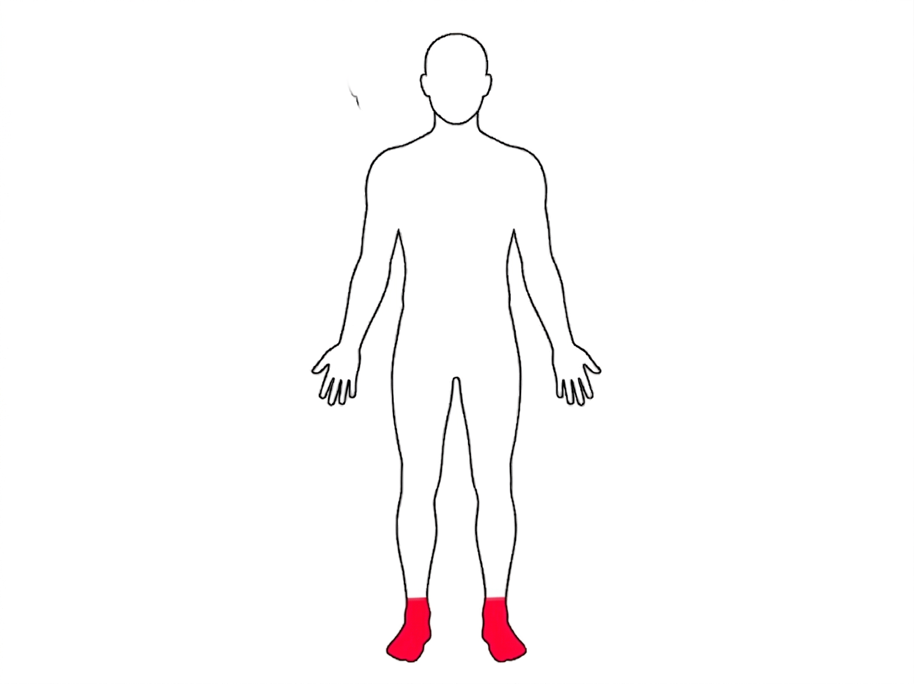
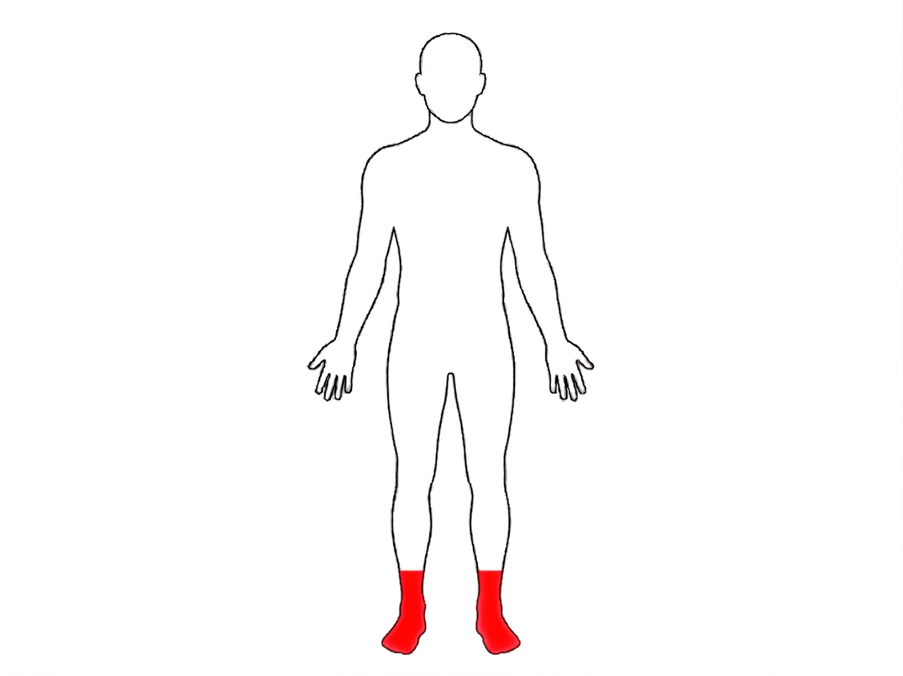
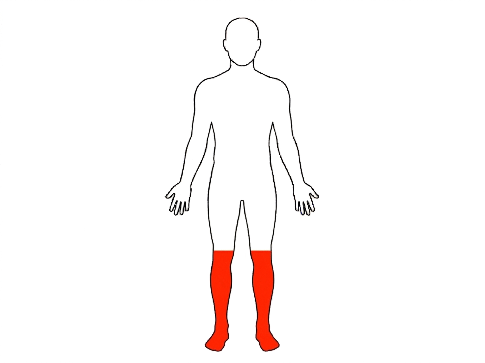
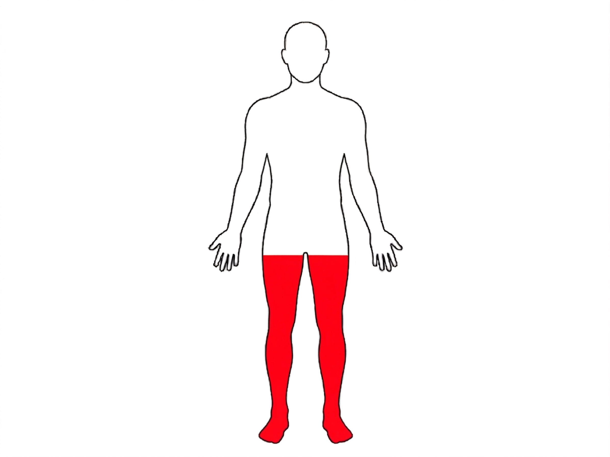
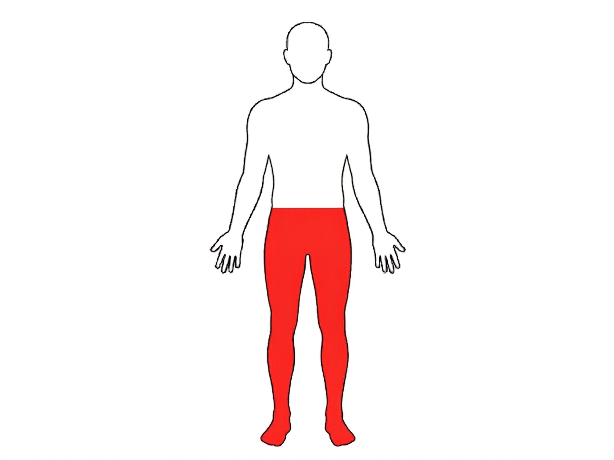
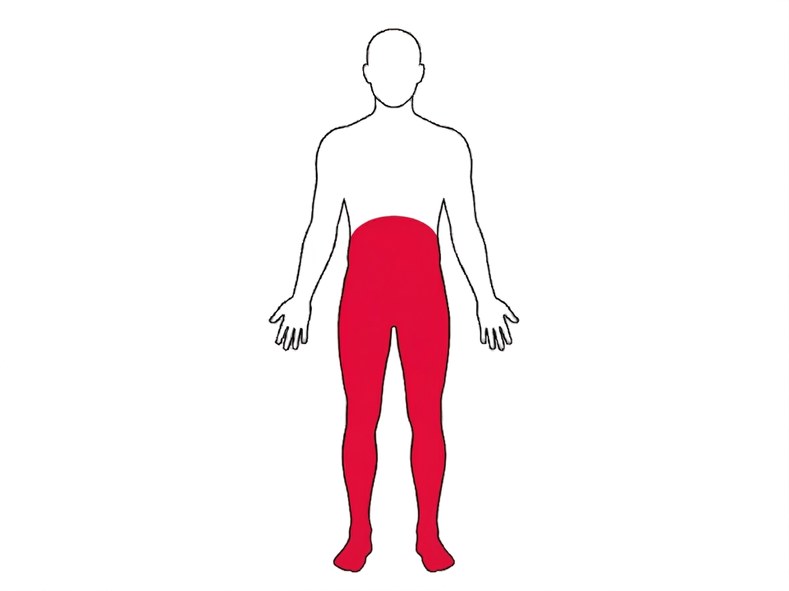
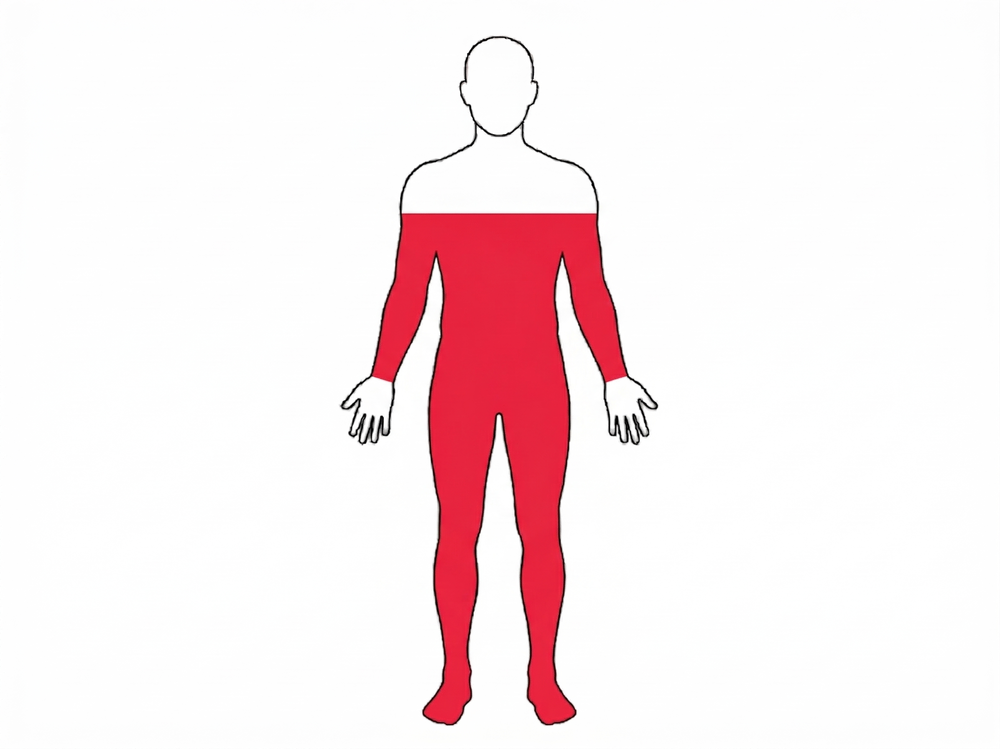
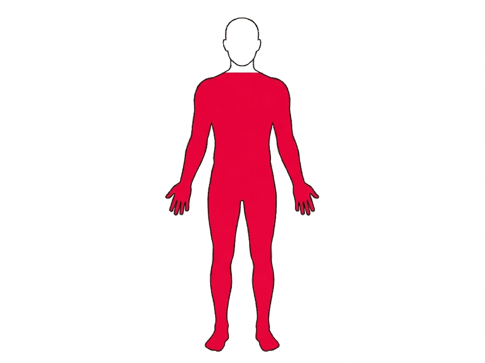
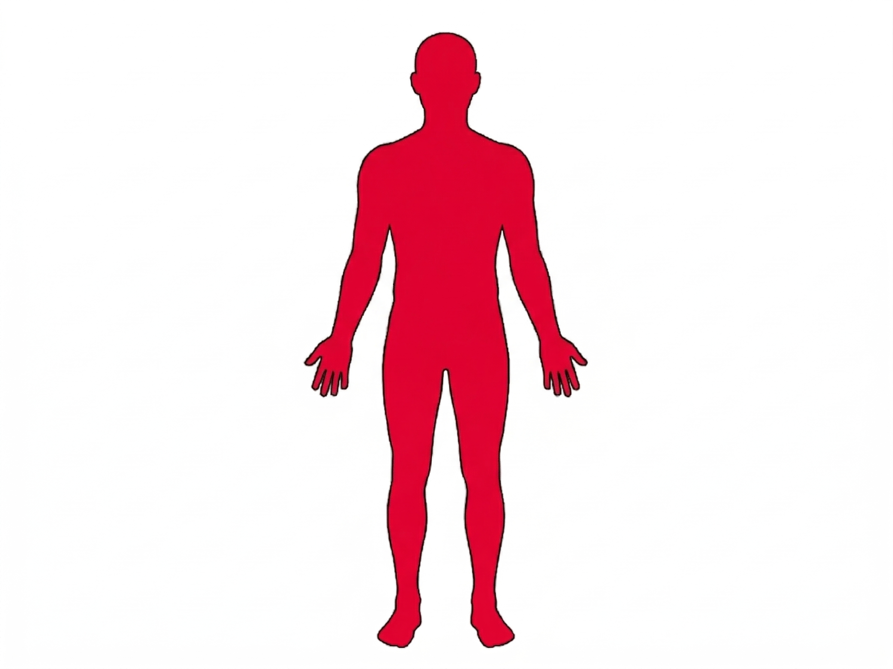

Eligibility Criteria:
Are you currently taking any medication (e.g., antibiotics, blood thinners)?
Certain medications, such as antibiotics or blood thinners, can affect the quality and safety of donated blood.
Are you between 18 to 65 years of age?
For your safety, there are minimum and maximum ages for blood donation. The minimum age is 18 and the maximum age is 65 for first-time donors.
Is your body weight at least 45 kg?
For safe blood donation, your body must have enough blood volume to recover quickly after donating. A minimum weight of 45 kg ensures that you can donate without putting yourself at risk of weakness or complications.
Have you had any infection, fever, cold, cough, weakness, dizziness, or fatigue today?
If you’re feeling unwell, your body needs its resources to recover, and donating blood may worsen your condition.
Have you undergone any surgery or major dental procedure recently (last 6–12 months)?
Recent surgeries or major dental work may involve infections, healing wounds, or medication use that make donation unsafe.
Did you have at least 6 hours of sleep last night?
Adequate rest before donation ensures your body is in a stable condition, helping you avoid dizziness or fatigue afterward.
Did you eat a light (non-oily) meal 2–3 hours before donating?
Eating a light, non-oily meal before donating helps maintain stable blood sugar and reduces the risk of dizziness during or after donation.
Have you had any tattoos, piercings, or acupuncture in the last 6 months?
These procedures may carry a risk of infections like hepatitis or HIV if done with unsterile equipment.
Have you consumed alcohol in the last 24 hours?
Alcohol affects hydration levels, blood composition, and judgment, making blood donation unsafe. It can also impair the quality of the donated blood.
You are eligible for the blood donation








